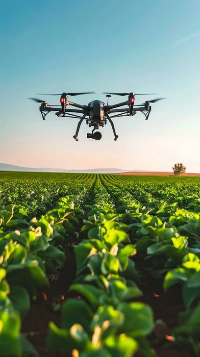

Conhecer a Interdependência entre o campo e a cidade é necessário para entender como a sociedade se desenvolve, bem como a importância de ambos os ambientes para a economia e a qualidade de vida.
A tecnologia potencializa o trabalho no campo através de ferramentas digitais:
Com o uso das tecnologias há um acompanhamento mais preciso, reduzindo desperdicios e levando a uma produção eficiente e sustentável. O trabalho no campo contempla a preservação do meio ambiente aliando-se a tecnologias desenvolvidas por estudiosos e técnicos da cidade. Valorizar o trabalho desempenhado tanto no campo quanto na cidade, atrai jovens conscientes de seu papel como agentes transformadores do meio em que se vive e a sociedade como um todo.
